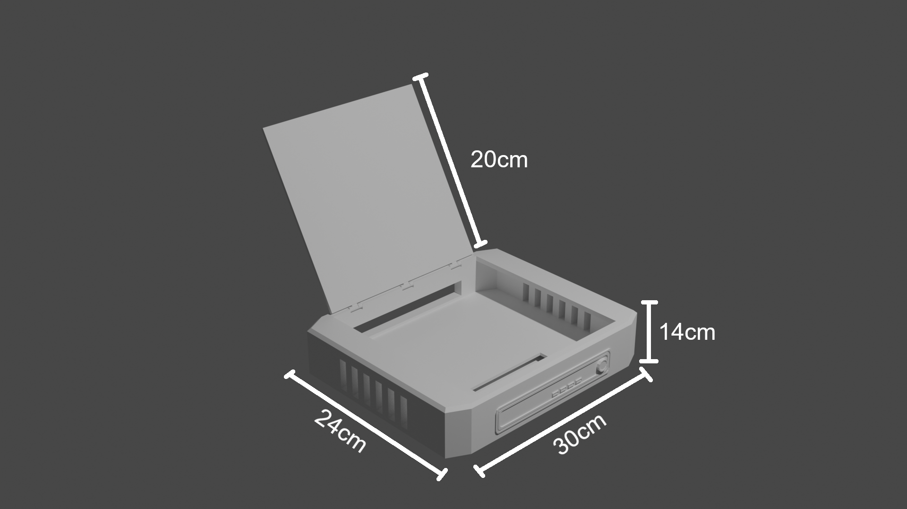

Nuestro proyecto trata de llevar una computadora común y corriente como se conoce a un tamaño muy reducido, como nosotros decimos “computadoras minimalistas”, con un diseño elegante y extravagante pero eficaz que cumple como objetivos ser bastante cómodo al instalar en escritorios o espacios donde una computadora normal no cabría y ser fácil de transportar.
